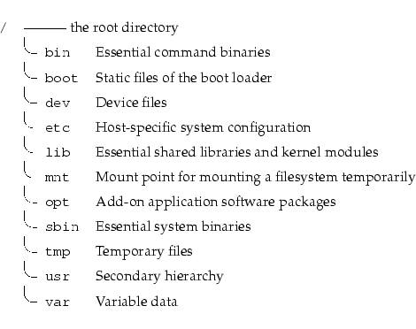

Chapter 3 :
فى الشابتر دة
هنتكلم عن
1- اية
الفرق بين البارتيشن والفايل سيسم
2-هوا
اية اللى بيحصل لما بوصل الكهربا بالكمبيوتر
وادوس على زرار الباور
3-هنسطب
لينكس
file system and partations :
البارتيشن دة
بكل بساطة هوا جزء من الهارد ديسك
بمعنى
ان انا لو عندى هارد ديسك 80 جيجا
هقسمة 4 بارتيشن
كل واحد 20 جيجا
طب اية بقى الفايل
سيستم
الفايل
سيتم دة يعنى طريقة الكتابة والقراءة من
على البارتيشن وانواعة الشهيرة فى ويندوز
NTFS/FAT32
وعندنا
فى لينكس
EXT3/EXT4/XFS
** فية حاجة عندنا
اسمها ;Linux directory tree
بصوا
عليها

انت اول لما تدوس
على زرار الباور اول اشارة كهربية بتروح
لل
bios
دة
وظيفتة اية دة وظيفتة يروح يشوف المكونات
بتاعة جهازك موجودة وسليمة ولا لا بيروح
للهارد يقولة انت موجود الهارد يقولة اه
يقولة شغال تمام يقولة اه ويروح للرامات
ويروح لكارت الشاشة …. الخ
بعد اما
يخلص بيروح للهارد يدور على اول
sector
in hard (MBR)
اية دة
؟
دة
الجزء اللى بيكون فية ملفات البوت بتاعة
نظام التشغيل بيروح يدور على حاجة اسمها
GRUB (GRand Unified Boot loader)
بياخدة
وبيروح يدية للرامات والرامات بعد كدة
تبداء تعمل تحميل لنظام التشغيل
هنسطب لينكس
قبل
ماتسطب لينكس لازم تكون عارف يعنى اية
/ , /boot ,/home , swap
swap يعنى
اية :
هيا
مساحة باخدها من الهارد ديسك واقولها
انتى هتشتغلى زى الرامات علشان اخليها
تحمل العمليات الغير نشطة
practical
1-linux tree
2-install linux